Cylinder Head Assembly (2AZ-FE) Disassembly |
| 1. Remove Valve Lifter |
 |
Remove the 16 valve lifters from the cylinder head.
| 2. Remove Intake Valve |
 |
Using SST, remove the 16 valve spring retainer locks.
Remove the 8 valve spring retainers, compression springs and intake valves.
| 3. Remove Exhaust Valve |
 |
Using SST, remove the 16 valve spring retainer locks.
Remove the 8 valve spring retainers, compression springs and exhaust valves.
| 4. Remove Valve Stem Oil Seal or O-ring |
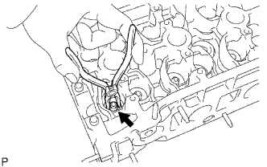 |
Using needle-nose pliers, remove the 16 valve stem oil seals.
| 5. Remove Valve Spring Seat |
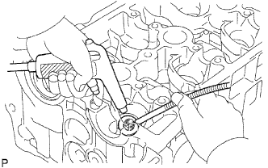 |
Using a magnetic finger and an air gun, remove the 16 valve spring seats.
| 6. Remove Plug NO.1 (w/ Head Straight Screw) |
 |
Using a 14 straight hexagon wrench, remove the 2 straight screw plugs No.1 and 2 screw plug gaskets.
| 7. Remove Stud Bolt |
Remove the stud bolts from the cylinder head.
| 8. Remove Ring Pin (w/ Head) |
Remove the head ring pins from the cylinder head.
| 9. Inspect Cylinder Head for Warpage |
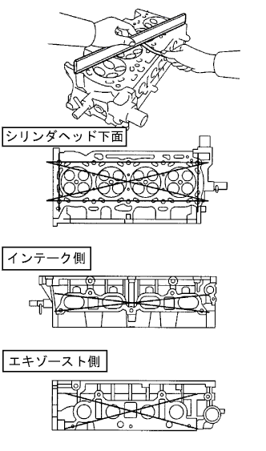 |
Using a precision straightedge and feeler gauge, measure the warpage of the bottom surface and manifold contact surfaces of the cylinder head.
| Measurement Point | Maximum [mm] |
|---|---|
| Bottom Surface | 0.05 |
| Intake Manifold Contact Surface | 0.08 |
| Exhaust Manifold Contact Surface | 0.08 |
| 10. Inspect Cylinder Head for Cracks |
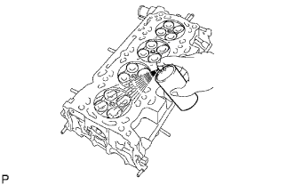 |
Using a dye penetrant (red check), check that there are no cracks in the cylinder head.
| 11. Inspect Valve Seat |
Apply a light coat of Prussian blue to the valve face.
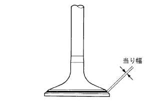 |
Lightly press the valve against the valve seat and, using vernier calipers, check the valve seat contact position and width.
| Measurement Point | Contact Width [mm] |
|---|---|
| Intake Side | 1.0-1.4 |
| Exhaust Side | 1.2-1.6 |
| 12. Repair Valve Seat |
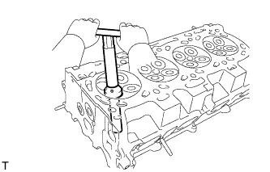 |
Using a 45° cutter head, cut the seat so that the contact width is wider than specified.
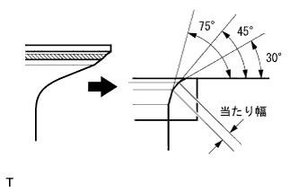 |
Using 30° and 75° cutter heads, cut the seat so that the valve contacts at the center of the face around the entire circumference and the contact width is as specified.
| Measurement Point | Contact Width [mm] |
|---|---|
| Intake Side | 1.0-1.4 |
| Exhaust Side | 1.2-1.6 |
Using compound, hand-lap the valve and valve seat.
After lapping, use Prussian blue to check that the valve contact is uniform around the entire circumference.
| 13. Inspect Camshaft Thrust Clearance |
Install the camshaft and camshaft No.2 to the cylinder head.
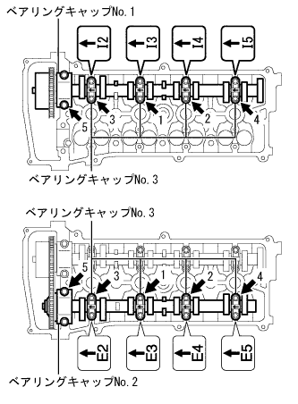 |
Check the front marks and numbers on the bearing caps, and tighten the 8 bearing caps No.1, No.2 and No.3 in the order shown in the illustration.
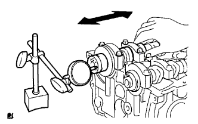 |
Using a dial indicator, measure the thrust clearance of each camshaft.
| Measurement Point | Standard [mm] |
|---|---|
| Intake Side | 0.040-0.095 |
| Exhaust Side | 0.080-0.135 |
| Measurement Point | Maximum [mm] |
|---|---|
| Intake Side | 0.11 |
| Exhaust Side | 0.15 |
| 14. Inspect Camshaft Oil Clearance |
Clean the camshafts and bearing caps.
Place the camshafts on the cylinder head.
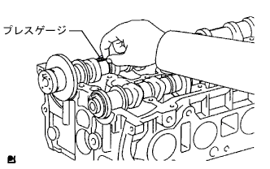 |
Lay a strip of Plastigage across each camshaft journal.
Check the front marks and numbers on the bearing caps, and tighten the 8 bearing caps No.1, No.2 and No.3 in the order shown in the illustration.
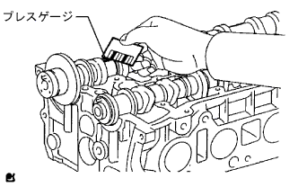 |
Remove the bearing caps and measure the Plastigage at its widest point.
| Selection Mark | Measurement Point | Standard [mm] |
|---|---|---|
| 1 | Intake Side No. No.1 Journal | 0.007-0.038 |
| 2 | Intake Side No. No.1 Journal | 0.008-0.038 |
| 3 | Intake Side No. No.1 Journal | 0.008-0.038 |
| - | Exhaust Side No. No.1 Journal | 0.015-0.054 |
| - | Other than No. No.1 Journal | 0.025-0.062 |
| Measurement Point | Maximum [mm] |
|---|---|
| Intake Side No. No.1 Journal | 0.07 |
| Intake Side Other than No. No.1 Journal | 0.10 |
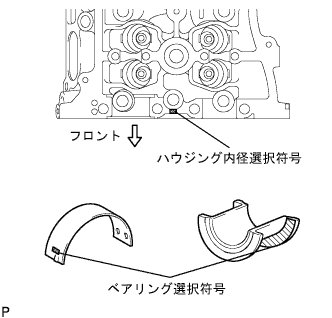 |
If the No. No.1 journal clearance is more than the maximum, select and replace the bearing.
| Selection Mark | Housing Diameter [mm] | Cam Bearing Thickness [mm] | Camshaft Diameter [mm] |
|---|---|---|---|
| 1 | 40.000-40.008 | 2.000-2.004 | 35.971-35.985 |
| 2 | 40.009-40.017 | 2.005-2.008 | 35.971-35.985 |
| 3 | 40.018-40.025 | 2.009-2.012 | 35.971-35.985 |
| 15. Inspect Inner Compression Spring |
Free Length Inspection
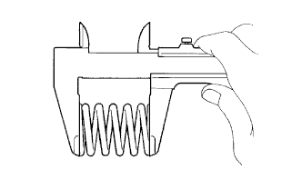 |
Using vernier calipers, measure the free length of the spring.
Deviation Inspection
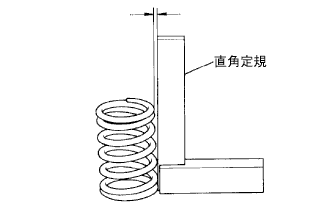 |
Using a steel square and vernier calipers, measure the deviation of the spring.
| 16. Inspect Intake Valve |
Overall Length Inspection
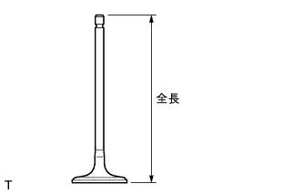 |
Using vernier calipers, measure the overall length of the intake valve.
Outer Diameter Inspection
 |
Using a micrometer, measure the diameter of the valve stem.
Margin Thickness Inspection
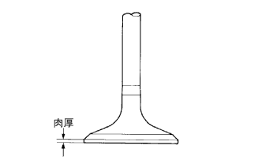 |
Using vernier calipers, measure the valve head margin thickness.
| 17. Inspect Exhaust Valve |
Overall Length Inspection
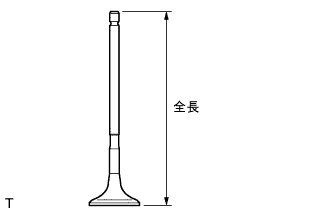 |
Using vernier calipers, measure the overall length of the exhaust valve.
Outer Diameter Inspection
 |
Using a micrometer, measure the diameter of the valve stem.
Margin Thickness Inspection
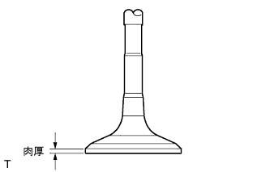 |
Using vernier calipers, measure the valve head margin thickness.
| 18. Inspect Valve Guide Bushing Oil Clearance |
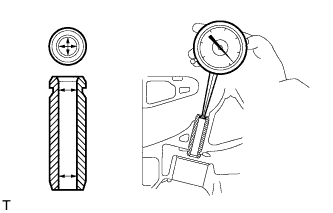 |
Using a caliper gauge, measure the inside diameter of the guide bushing.
Calculate the oil clearance from the guide bushing inside diameter and the valve stem diameter.
| Measurement Point | Standard [mm] |
|---|---|
| Intake Side | 0.025-0.060 |
| Exhaust Side | 0.030-0.065 |
| Measurement Point | Standard [mm] |
|---|---|
| Intake Side | 0.08 |
| Exhaust Side | 0.10 |
| 19. Remove Intake Valve Guide Bushing |
Heat the cylinder head to 80-100°C.
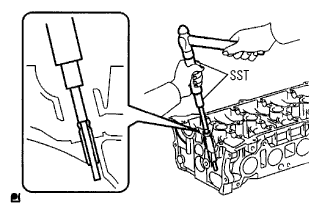 |
Using SST, tap out the intake valve guide bushing toward the combustion chamber.
| 20. Remove Exhaust Valve Guide Bushing |
Heat the cylinder head to 80-100°C.
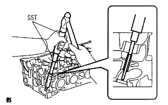 |
Using SST, tap out the exhaust valve guide bushing toward the combustion chamber.
| 21. Inspect Valve Lifter |
Outer Diameter Inspection
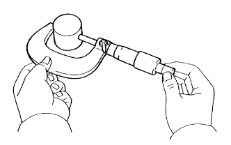 |
Using a micrometer, measure the valve lifter diameter.
Oil Clearance Inspection
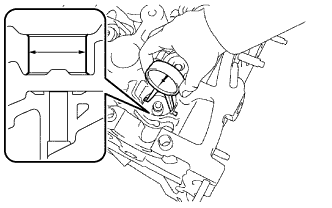 |
Using a caliper gauge, measure the lifter bore diameter of the cylinder head.
Calculate the clearance from the valve lifter diameter and the lifter bore diameter.